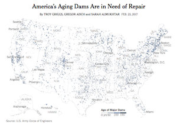
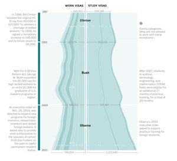
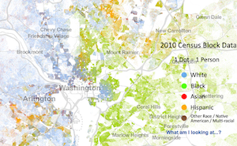
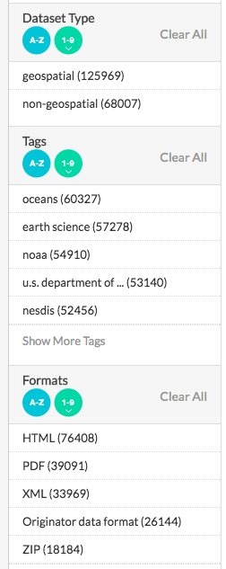
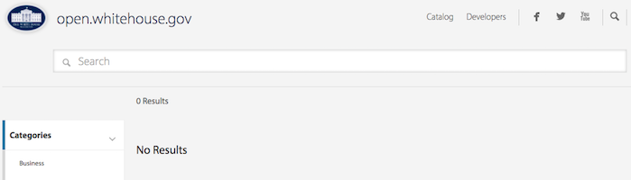
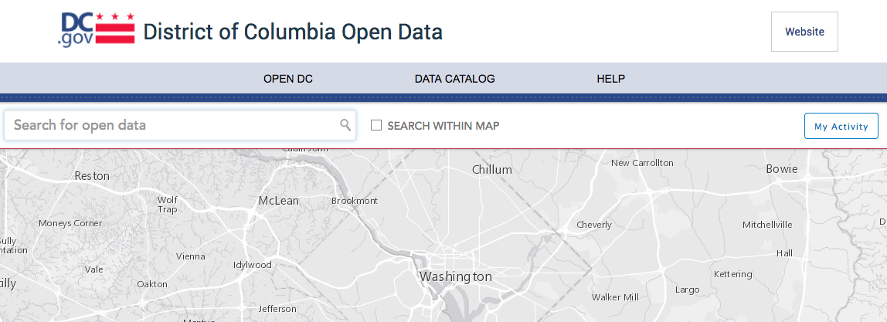
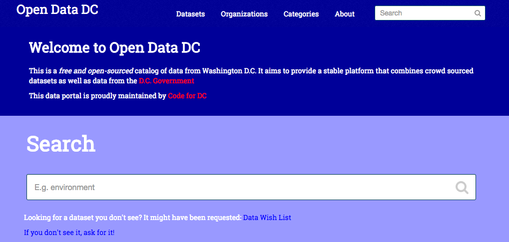

Hey Code for DC!
Let's talk Open Data.
Brought to You by Open Data
  
(Plus so, so, so many business and policy decisions)
Data.gov! Nearly Two! Hundred! Thousands! Datasets!

Well, actually...
Data.gov is valuable and great to peruse, but the number of datasets may make you more excited than you should be.
More than half of the data is from two agencies (NOAA and Fish and Wildlife Services) and the majority is geospatial.
Much of the data is not a format that cannot quickly be visualized.
Federal Open Data Under Trump
It's disappearing!

...while, it's a little more complicated than that.
But the future collection, release, and quality of data is a big concern.
You should be very concerned about changing methodology that distorts government data.
Going Local: DC's Data Portal
Like data.gov, this is far from perfect. But we can make open data in DC better!
Filling in the gaps of opendata.dc.gov
DC has a lot of data in lots of different places. Let's build a single home!
DC data lives in many different locations - maybe on the open data portal, (briefly) live on a Dropbox folder for a hackathon, tucked away on an agency website, or an individual's Github.
One time I tried documenting all the places to find local DC data.
data.codefordc.org can be a more comprehensive home of DC data!
The data can be in a terrible format: PDF!
PDFs are ::the worst::
Tools like http://tabula.technology/ can free that data.
The data can be in a terrible format: Just on a Web Page!
Sometimes a web page holds data that can only be viewed on that web page. Web scraping, put simply, lets you gather data from that web page.
To learn more I like this Greg Rada intro and this walkthrough from Stanford's Text as Data course.
The data can be a little messy
A lot of local data (taxi trips, permits, inspections, etc.) does not have a long history of being used for research and policy and lacks the infrastructure (or did so until very recently) for accurate, complete and clean open data reporting.
Documentation is often sparse.
The data might not be open
There is a good amount of government data made open. There is a lot of government data not that is open. There are many reasons for this. In many cases, you have the right to this data. You can FOIA for it.
Anyone can FOIA for data. Yes, you too!
FOIA: A worthy challenge!
You are freeing data into the world! What a joy!
Know that: your request should be as specific as possible because officals aren't always keen to fill in the blanks, delivery of data may be much longer than 15 days, you may have to pay, and the data will probably be in a terrible format.
You are freeing data into the world! What a joy!
How to FOIA
Where you should FOIA: Muckrock
Where to learn more on how FOIA works: Reporters Committee for Freedom of the Press
How to FOIA DC data: Check out my guide
What you should FOIA: Everything.
DC's new Data Policy
DC has a new data policy. You should check it out.
There's a lot in it! One the big pieces is a comprehensive list of DC government data (open and closed) in a year. That's a lot to FOIA!
Have opinions on data to prioritize being open? Stop by Open Government Advisory Group meeting. And help fill out data.codefordc.org!